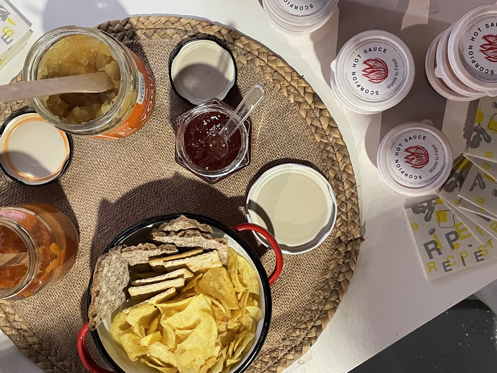

So after recollecting the fruits and vegetables from Mercabarna and taking them to the intervention space, we analyzed them and saw which ones were about to go bad. Those ones are the ones we cooked to make sauces or jam in order to preserve them better. The others were left for the intervention two days from that. We invited people from different backgrounds that we thougt could contribute to our research. We had an Architect girl from Serbia/Moscow, an Interior Designer from Dubai/India, an Urbanist from Mexico, a Graphic Designer from France, a Linguistic Studies girl from Spain, and two people from the U.S. We found it very interesting how aside of being from different cultures we all came up with similar ideas or recipes. There are very strong connections in food around the world.
We gave the participants post its so they could write down ideas they had on recipes that could be done with what we had at hand. There were many missing ingredients for some of the recipes but we manage to use substitutes or just do them without those ingredients. In that sense we found a group of adaptable and innovative people. Each of us then decided to focus on a dish. When asked about it later on the feedback surveys, the participants said it would've been nice if everyone got to see how each recipe was done so if they liked it they could replicate it at home. This would've been nice but also less efficient and more disorganized. We decided to make a recipe book out of everything that was cooked that day so people could recplicate those dishes.
While some were waiting for their dish to bake or ran out of tasks we also had some activities set out for them to engage more in the discussion surrounding food systems. We draw a map in a big piece of cardboard and asked the participants to map out food origins. So just anywhere they thought some fruits and veggies came from originally. When you stare at that map from a distance you realize that most of the food we eat has already travelled a long distance to get to your plate. Which also makes you wonder the impact of that behaviour and how easily we got used to having just any fruit or vegetable in the supermarket at an accesible price or time frame.
There was another activity we had which was about learning how to do compost and fertiliser for your plants with the food waste you generate at home. In this way that "waste" becomes an output that could be reused for/by something else. The question around this subject is the amount of food waste we produce and the amount of by product we end up with. There is usually more fertiliser being made than what a plant can hold. You'd need to have lots of plants in order to reuse all that food waste. But food waste can be used for many things, not just for plants. There are lots of biomaterials that can be done out of food waste like orange peels, coffee grounds, shrimp skin, seeds, and many others. We just need to dive deeper into biomaterials research and get a bit creative. Once you understand the properties of each component then you can actually know how to implement it and where. We also tried doing peel art with the peels we had left from the food we cooked, which was nice but also not very appealing to everyone. Also the byproduct is usually not used for anything else rather than displayed art.
The most valuable thing I learned with this intervention was that people don't really know how their food gets to their plate or grocery store and worse... where it ends up. Aside from this, we realised some people are actually curious and want to know more about what they can change in their habits to improve their actions in relation to food waste. There is so much that could be done but people need to be educated in this matter first. They say that consumers are the ones that define how the system works by demanding what they need, and I think this is true. Us as consumers we need to be more demanding to brands about how they are doing things and when we start changing certain habits it impacts directly into consumer behaviour. As long as we are conscious about how to take care of our natural habitat and ourselves along the way we can start making a change. We need to stop asking for perfection from brands that are trying to go the right direction and put more pressure on the ones that are neglecting their responsability towards the entire ecosystem.
You can watch the video of our food waste workshop here.
On the design dialogues day we decided to display a set of sauces we prepared out of the food that was going ripe, in order to conserve it for longer. We gave people samples and discussed how something that's ripe can still be edible and tasty. We need to change some misconceptions about food and get informed. We also displayed the food waste we gathered for fertiliser and the map with food origins. I chose to display individually a manual on how to start changing habits towards a more sustainable living. As I want to dig deeper into our every day life impact (this focusing more on leisiure and tourism) I wanted to start with some advice and knowledge to share with interested people. After this I decided I want to explore more about the harmful actions we could reverse as humans in a natural ecosystem by also enjoying some recreation. I'll keep you posted.
